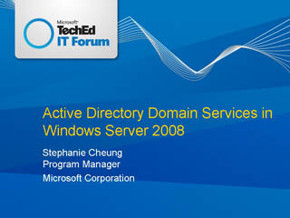
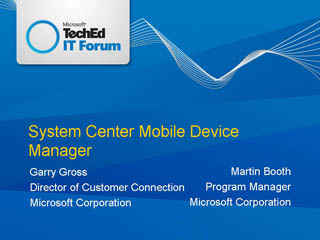
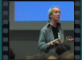
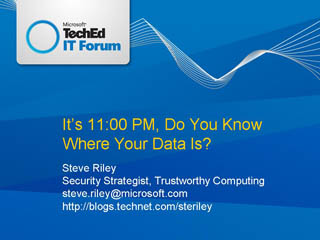
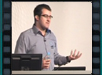
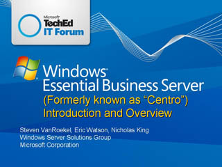
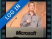
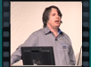
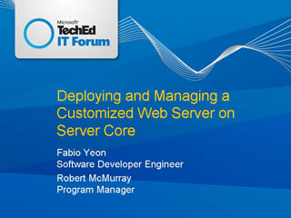
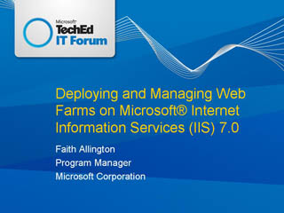

Active Directory Domain Services in Microsoft Windows Server 2008

Speaker(s): Stephanie Cheung
Streaming:
SDVideo(ASF)
System Center Mobile Device Manager - Microsoft's Next Generation Device Management and Remote Access Solution

Speaker(s): Garry Gross ,Martin Booth
Streaming:
SDVideo(ASF)
It's 11:00 PM. Do You Know Where Your Data Is?


Speaker(s): Steve Riley
Streaming:
SDVideo(ASF)
Windows Server Codename "Centro": IT Infrastructure Solution for Mid-Size Businesses


Speaker(s): Nicholas King ,Steven VanRoekel
Streaming:
SDVideo(ASF)
Microsoft Exchange 2007 Service Pack 1 Tips and Tricks

Speaker(s): Scott Schnoll
Streaming:
SDVideo(ASF)
Deploying and Managing a Customized Web Server on Server Core


Speaker(s): Robert McMurray ,Fabio Yeon
Streaming:
SDVideo(ASF)
Deploying and Managing Web Farms on Microsoft Internet Information Services 7 (IIS 7)

Speaker(s): Faith Allington
Streaming:
SDVideo(ASF)